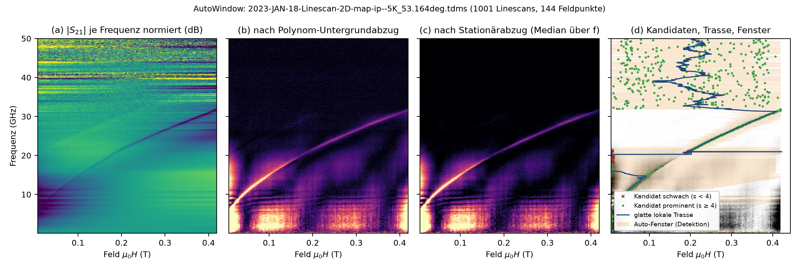

AutoWindow¶
Kritischster Schritt: falsches Fenster ⇒ falsche Werte ohne Optimierer-Fehler. Prinzip: die Resonanz wandert mit f (Kittel), Störungen sitzen bei festen Feldern.
| Schritt | Funktion | Kern |
|---|---|---|
| 1 Untergrundabzug je Linescan | _detrend_residuum |
Polynom (Grad ≈ 1 je 0,5 T, 2…6) an Re/Im; Residuum \|S21 − P(B)\| |
| 2 Stationärabzug (nur gemeinsames Feldgitter) | _stationaeren_untergrund_abziehen |
stat[B] = median_f r(f,B); max(0, r − stat) |
| 3 Kandidat + Prominenz | _kandidat |
argmax; s = (max − med)/(1,4826·MAD); verlässlich ab s ≥ 4 |
| 4 glatte lokale Trasse | _glatte_lokale_trasse |
gleitende robuste Gerade (31 Punkte, MAD-Verwerfung); Rückfall: robustes Polynom ≤ 2 |
| 5 Fenster | _fenster_um |
Kandidat, wenn prominent + trassenkonsistent, sonst Trasse + _verfeinere_zentrum; Halbbreite max(8·FWHM/2, 6ΔB), Deckel 0,4 T |

Grenzen: ΔH ≳ 0,3 T (Deckel, Polynom verschluckt Linie), sehr schwaches Signal nahe ip, AFM-Proben, dominante stationäre Hochfeldartefakte → Dispersion manuell vorgeben (zentren).